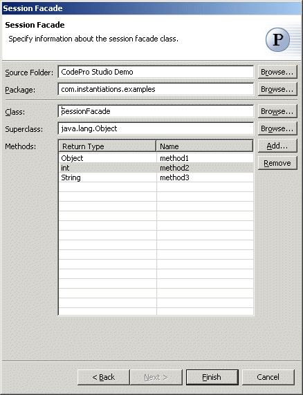

Session Facade Pattern
The  Session
Facade pattern
encapsulates the complexity of interactions between the business objects participating in a workflow.
It manages the business objects, and provides a uniform coarse-grained service access layer to clients.
Session
Facade pattern
encapsulates the complexity of interactions between the business objects participating in a workflow.
It manages the business objects, and provides a uniform coarse-grained service access layer to clients.
Wizard
Applicability
Additional Resources
Wizard
| Option | Description | Default |
| Source folder | Enter a source folder for the session facade class. Either type a valid source folder path or click Browse to select a source folder via a dialog. | The source folder of the element that was selected when the wizard was started. |
| Package | Enter a package to contain the session facade class. Either type a valid package name or click Browse to select a package via a dialog. | The package of the element that was selected when the wizard was started. |
| Class | Enter a name for the session facade class. Either type a valid class name or click Browse to select a class via a dialog. | <SessionFacade> |
| Superclass | Enter a name for the superclass of the session facade class. Either type a valid class name or click Browse to select a class via a dialog. | <java.lang.Object> |
| Methods | Specify the methods of the session facade class. | <none> |
Applicability
Use the Session Facade pattern when-
There is tight coupling, which leads to direct dependence between clients and business objects.
-
There are too many method invocations between client and server, leading to network performance problems.
-
There is a lack of a uniform client access strategy, exposing business objects to misuse.